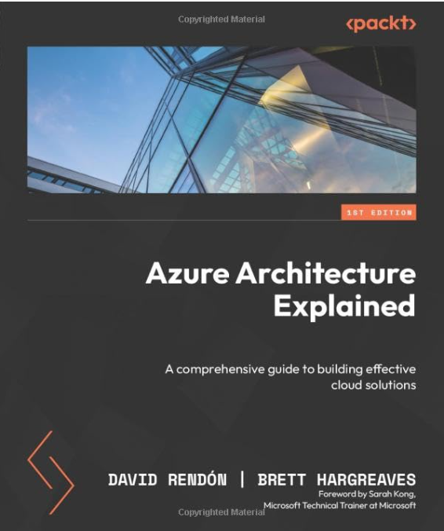

In this post, I want to share my review of another Azure book I read recently, Azure Architecture Explained this time from Brett Hargreaves and David Rendon published by Packt Publishing and available on Amazon as well as other e-book subscription platforms.
Apart from the great content, it was nice to see one of my own Microsoft Technical Trainer Team colleagues, Sarah Kong, providing the foreword.

About the book (from the cover)
This book provides you with a clear path to designing optimal cloud-based solutions in Azure, by delving into the platform’s intricacies.
You’ll begin by understanding the effective and efficient security management and operation techniques in Azure to implement the appropriate configurations in Microsoft Entra ID. Next, you’ll explore how to modernize your applications for the cloud, examining the different computation and storage options, as well as using Azure data solutions to help migrate and monitor workloads. You’ll also find out how to build your solutions, including containers, networking components, security principles, governance, and advanced observability. With practical examples and step-by-step instructions, you’ll be empowered to work on infrastructure-as-code to effectively deploy and manage resources in your environment.
By the end of this book, you’ll be well-equipped to navigate the world of cloud computing confidently.
What this book covers
The book has 14 chapters, about 400 pages in total (!!!), organized in 3 different ‘Parts":
Part I - – Effective and Efficient Security Management and Operations in Azure
This first section lays out the Identity Foundation for hybrid cloud, touching on Azure Active Directory and Microsoft Entra. I guess Dave and Brett were in the middle of the writing process, when Microsoft decided on the name-change of the Azure Identity platform from AAD to Entra ID, which is totally acceptable and not bothering me while reading through the content. It got emphasized several times (now Entra ID), and after page 3, you’re used to the new name.
The mixed use of Azure Active Directory and Entra ID remains in chapter 2, which provides a more deep-dive on the typical administrative and architectural side of what it takes to get started with Entra ID from scratch, as well as how to deal with hybrid Identity when running an on-premises Active Directory scenario.
After going through Chapters 1 and 2, this first part is closing with the positioning of Microsoft Sentinel, with a focus on mitigating lateral movement, which also looks at a possible security breach scenario with suscpicious Office 365 user sign-ins. Which I think is a great scenario, since most Azure customers are probably Office 365 customers as well - or the other way around.
Part II - Architecting Compute and Network Solutions
Part II is the biggest chunk of the book, and covers A LOT. Starting with Data Solutions, it provides insights on Azure Storage Accounts, Azure SQL and Azure Cosmos DB. From there, it switched to Virtual Machine migration, as well as App Services, and how to migrate data.
There is a - somewhat short in my personal opinion - topic on Azure Monitor, followed by a good portion of Azure Containers, covering both Azure Container Instance and Container Apps. (interesting enough, no details on Azure Kubernetes Services, which makes me believe the authors may have used the Az-305 Designing Microsoft Azure Infrastructure Solutions Study Guide as a guideline for what this book should cover, and what not…)
The biggest chapter in this section is - understandable - Azure Networking, stretching over 60 pages, and not leaving any topic out of the context of Virtual Networking, Hybrid Networking using VPN and Azure WAN, covering Load Balancing scenarios, as well as Azure Firewall for protection. The protection/security focus moves over into Chapter 9, which expands on how to secure your applications, using Azure Front Door, Azure Application Gateway as well as VNET integration for App Services.
Part III - Making the Most of Infrastructure-as-Code for Azure
Shifts from Azure Solution architecting to Governance and DevOps, using Infrastructure as Code with Bicep, as well as pipeline-based deployments using Azure DevOps.
The last chapter, wraps up the content of the book, by sharing more Tips from the Field on governance, monitoring, Identity protection, networking and containers.
My Personal Feedback and observations
As said earlier, this book covered a lot!! Which I think is its biggest benefit. I might be a bit biased having been an co-author of a similar Azure Architect-oriented book, as well as teaching the AZ-305 course for multiple years now. The content is great, but doesn’t specifically target Cloud Architects, since it also has several exercises/tasks in there. Which is OK for administrators, developers and devops teams, but not (always) something you expect a cloud Architect to still work on. Often, it turns into a hands-on how-to-do-something in Azure. This is fine, as it will help those personas who are wearing multiple heads at their organization (aren’t we all??), and often clarifies what got explained in the text, with additional how-to-guidance.
What works best when going through this book, is approaching each topic as a stand-alone deep-dive on the subject. It covers the cloud-architectural design level up to a great detail, and brings it back to the administrative level.
Maybe Packt (or the authors) should have chosen a different title, something like “Azure Resources Explained”, as I’m left a bit in the dark on the pure cloud architect questions, which typically cover business, non-technical and technical challenges when moving workloads to cloud, or deploying new ones as cloud-native. Which leaves me no other way to think of this as the publishing team was using the Azure AZ-305 exam as a lead for the majority of the content. And since that exam and certification is targeted towards cloud infrastructure architects, it is one of the best books I could recommend in helping with the preparation of studying and passing that exam. Even more so, if you are thinking of studying for the AZ-104 exam (Azure Administrator Associate), this book will also be more than a valid resource. And since AZ-104 is a prerequisite for the AZ-305 Architect credential, having all content crammed in a single book, is a double-win if you ask me!
Summary
I don’t see myself as the target audience for this book, since I live in Azure every day, yet still enjoyed reading the book page-by-page. The fact that it is this complete, stretching over a lot of the Azure resources and services, combining both Architect-like as well as Administrator-like content, makes this a great book to have on your shelf.
Ping me if you should have any additional questions.

Cheers!!
/Peter